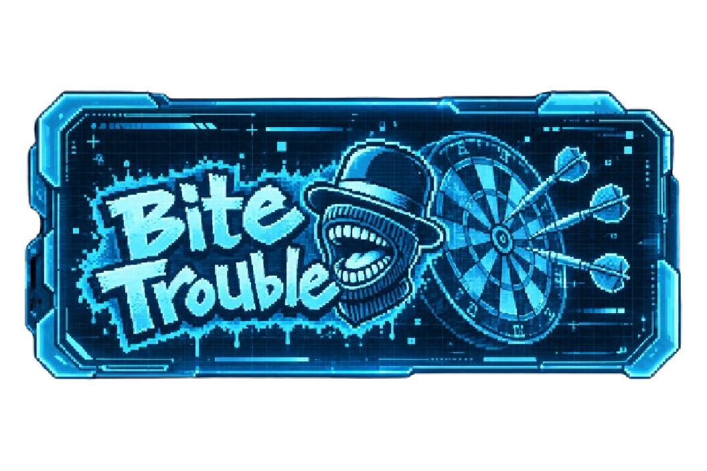

BT Darts Score Board
Giocatori, tornei e classifiche per le serate di freccette. Un companion offline per il totem Pub Time Darts.
- React
- TypeScript
- Vite
- IndexedDB
- Fastify
Approfondimento
- Il problema
- Il totem gestisce giochi e punteggi, ma non l’organizzazione di giocatori e tornei.
- La soluzione
- L’app registra risultati, organizza gironi ed eliminazione diretta e conserva lo storico. La modalità standalone usa IndexedDB e funziona offline; quella condivisa usa un’API Fastify con SQLite.
- Il mio contributo
- Ho definito i requisiti e l’interfaccia del companion, lavorando al codice con il supporto dell’AI.
- La difficoltà affrontata
- Gestire iscritti e squadre oltre i quattro slot del totem, distribuendoli in manche flessibili senza confondere i turni. Il risultato finale del totem resta il riferimento ufficiale.
- Verifiche documentate
- Il repository include test Vitest per regole, API e persistenza e test Playwright per i flussi shared e standalone. È documentata una checklist per le prove su smartphone: la presenza dei test non equivale a una validazione sul campo completa.
- Uso dell’AI
- L’AI supporta lo sviluppo del codice. Requisiti e scelte di interfaccia sono parte del mio contributo; le verifiche tecniche documentate sono consultabili nel repository.